- SDK介绍
- SDK简介
- SDK能力池
- 使用准备工作
SDK简介
iChano（南京云恩通讯科技有限公司）致力于为互联网智能设备厂商与软件开发商、系统集成商提供专业的跨平台实时音视频连接服务。
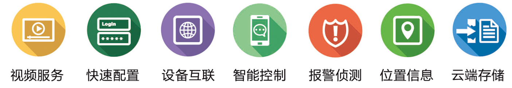“众云视频开放平台”是由南京云恩通讯科技有限公司自主研发的一个极具备开放性、 兼容性、交互性于一体的智慧视频云服务平台，它集视频通讯、云存储、物联网、互联 网技术于一体，为用户提供业内领先的PaaS （Platform-as-a-Service）云服务。
“众云视频开放平台” 将音视频编码、传输存储分析等核心功能封装成可以在 Android、iOS、Linux、Windows 、Mac OS环境下给各类智能硬件使用的SDK， 提供给智慧安防、智能家居、物联网、智能车载、传统硬件领域合作伙伴，实现用户与 设备及设备与设备之间的互联互通互动，充分利用和发挥“众云视频开放平台”移动端 及云端服务优势，更大范围帮助传统行业实现互联网化。
“众云视频开放平台”SDK产品拥有强大的OS/SOC整合能力，提供灵活弹性的云模块服务，专注消费型业务和企业型业务，一方面为这类企业和消费型智能产品提供专业P2P（音视频互联网传输穿透技术）的连接服务，使其简单升级为智能产品，另一方面，通过“众云视频开放平台”提供数据交换、设备管理、逻辑引擎、消息推送，并为合作伙伴提供后续增值业务（云存储、视频智能分析、数据报告、固件升级、用户系统等）。
众云视频能力池展示：
备注: 是目前SDK支持此功能，是不支持
| 功能 | 平台 | 详情 | ||||
|---|---|---|---|---|---|---|
| iOS | Andorid | Windows | Mac OS
(仅观看端) |
Linux
(仅采集端) |
||
| 媒体传输 | ||||||
| 实时视频传输 | 支持H264、JPEG,支持1080P高清视频传输 | |||||
| 双向视频传输 | 可定制 | 可定制 | 双方可同时音视频聊天 | |||
| 双向音频传输 | 支持ACC、G711A/U、PCM | |||||
| 远程播放录制视频 | 支持播放、拖拽、暂停视频及远程删除视频等操作 | |||||
| 远程获取视频截屏 | 观看端可以向采集端随时请求一张当前视频的JPEG截图 | |||||
| 媒体录制 | ||||||
| 定时录制 | 观看端可设定采集端在设定的时间段内启动视频录制 | |||||
| 报警录制 | 观看端可设定采集端在设定的时间段内启动视频录制 | |||||
| 自定义录制 | 将实时视频录制在观看端或采集端 | |||||
| 截屏 | 将实时视频截屏保存在观看端或采集端 | |||||
| 内存卡满自动覆盖 | 采集端功能 | 采集端内存卡满，视频文件自动覆盖早期视频 | ||||
| 录制视频自动删除 | 观看端可设定采集端自动删除过期视频 | |||||
| 远程控制 | ||||||
| 码流切换控制 | 观看端可以远程控制采集端码流切换 | |||||
| 闪光灯控制 | 作为采集端无此功能 | 作为采集端无此功能 | 作为采集端无此功能 | 观看端可以远程控制采集端开启闪光灯 | ||
| 前后摄像头切换 | 观看端可远程切换采集端前后摄像头 | |||||
| 修改设备名 | 观看端可远程修改采集端设备名 | |||||
| 修改用户名和密码 | 观看端可远程修改采集端用户名和密码 | |||||
| 平移和旋转控制 | 需配合云台设备 | |||||
| 自定义命令 | 用户自定义命令传输通信 | |||||
| 侦测报警 | ||||||
| 运动侦测报警 | 采集端功能 | 当视频画面发生变化，会触发报警回调 | ||||
| 外接传感器报警 | 采集端功能 | 可自定义外接传感器，传感器被触发后，会调用报警回调 | ||||
| 报警灵敏度控制 | 灵敏度分为高中低三个级别 | |||||
| 报警实时推送 | 触发报警观看端消息栏会收到报警通知 | |||||
| 实用功能 | ||||||
| 文件传输 | 支持观看端和采集端相互传输文件 | |||||
| 局域网搜索 | 搜索连接到同一局域网的所有设备 | |||||
| 高级服务（需要与商务具体洽谈） | ||||||
| 固件升级 | 固件一键升级 | |||||
| 用户登录系统 | 观看端功能 | 观看端用户登录系统 | ||||
| 视频云存储 | 采集端功能 | 自动存储最近30天的视频到云端 | ||||
| 浓缩视频 | 采集端功能 | 采集端将一天的有效视频浓缩成短视频 | ||||
| 消息、邮件推送集成方案 |
（仅支持邮件） |
整套的消息推送解决方案，无需用户再去集成其他推送方案 | ||||
| 其他 | 支持各类需求定制 | |||||
(1)登录
登录网站http://www.zvcloud.com，点击登录。
输入自己的用户名、密码，点击“登录”即可。
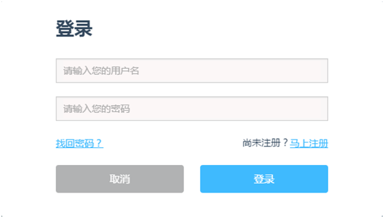(2)注册
第一次使用的用户，需要注册新账户。点击登录右方的注册，填写用户名，密码
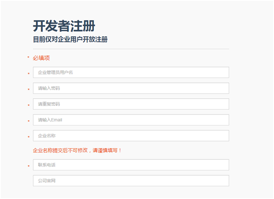阅读众云视频SDK平台注册协议后，勾选同意，就可以点击提交注册啦。
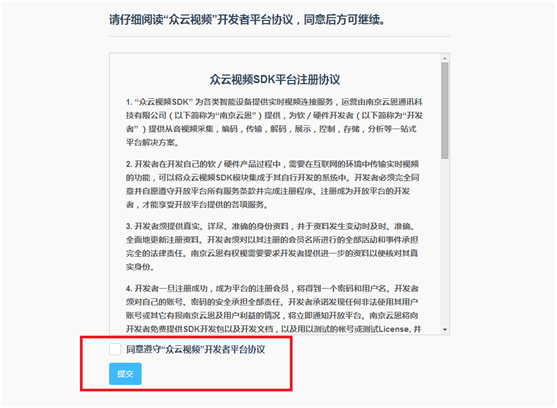(3)获取companyID和Key
登录完成后，在右上角可以看到后台管理界面。
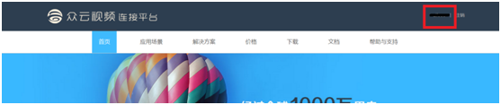点击“账户设置”，进入个人信息页面，可以查看企业ID、Key！
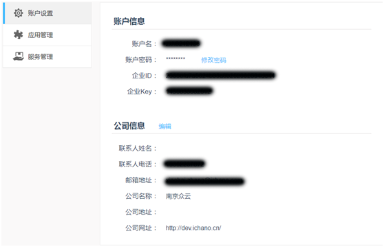(4)创建产品
右侧栏“应用管理”，点击“立刻创建”按钮
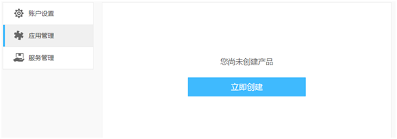输入产品名称，选择所需的服务方式，点击创建。
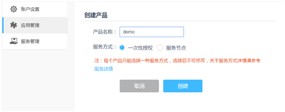可通过“创建更多产品”来创建新的产品
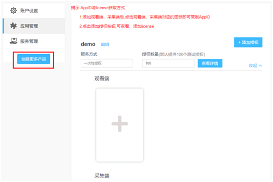(5)获取appID
展开当前产品，添加观看端和采集端
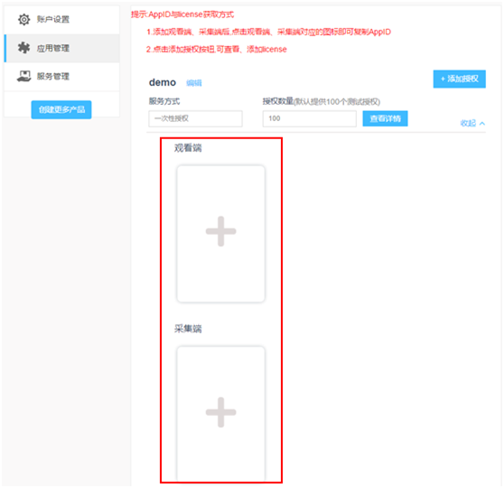根据自身选择不同设备的类型。
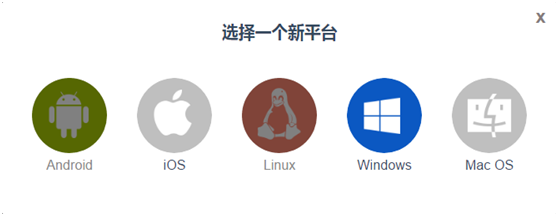获取不同平台的AppID
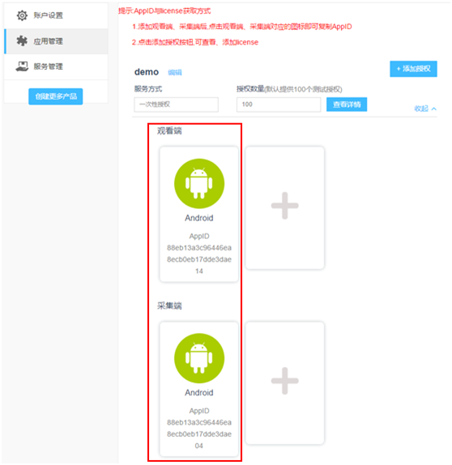(6)获取license
点击添加授权。选择添加方式：
1、手动派发：手动输入添加license
2、批量派发：随机添加若干license
3、批量导入：下载excel模板，并上传。导入大量的license
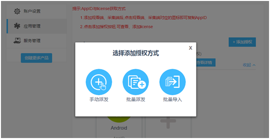填写需要授权的License（客户自定义，由字母和数字任意组合），点击激活就可以啦。
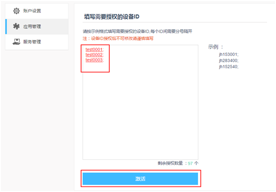激活成功!
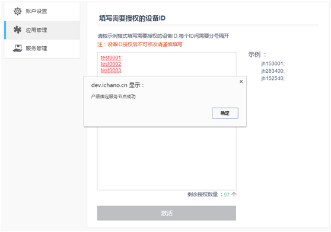如果已经授权，还可以可以进行查看，点击查看详情。
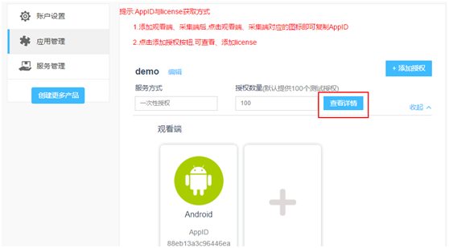 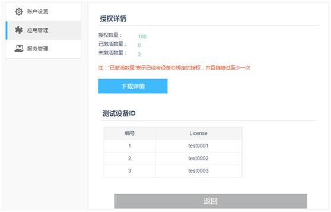- Android采集端开发文档
- 导入说明
- 初始化与登录
-
采集端视频界面
- 加载视频界面
- 设置视频参数
- 截图
-
录制视频
- 录制视频回调通知
- 本地录制
- 定时录制
- 运动侦测
- 自定义命令
- 发送接受文件
- Android观看端开发文档
- 导入说明
- 初始化及登录
- 添加采集端设备
-
观看端视频界面
- 加载视频界面
- 观看端视频全屏
-
观看端基础功能
- 设置观看端音频
- 截图
- 本地录制
- 开启或关闭闪光灯
- 切换前后摄像头
- 自定义命令
- 发送接受文件
-
设置采集端配置信息
- 设置采集端设备名
- 设置采集端用户名和密码
- 设置采集端定时录制
- 设置采集端运动侦测
- 登出及注销
Android sdk集成指南
1.导入SDK:
如果您要集成众云视频采集端相关功能，只需要导入众云对应的sdk，即把libs目录下armeabi中的so库、avs_sdk_v.x.xjar包和android-support-v4.jar包导入您工程下的libs目录下。导入后您的工程下的libs应该包含图中所示文件。

备注：avs_sdk_v.x.xjar是sdk对外提供的接口jar包，libnustl_shared.so是公有库，libsdk.so和libstreamer.so是底层核心库，lib264.so是视频编码库，libaccodec.so是音频编码库，libichaudio.so是音频降噪、回音消除库。
2.AndroidManifest.xml权限配置：
//允许程序读取所有者数据
<uses-permission android:name="android.permission.READ_OWNER_DATA" />
//允许一个程序写入但不读取所有者数据
<uses-permission android:name="android.permission.WRITE_OWNER_DATA" />
//允许程序请求访问使用照相设备
<uses-permission android:name="android.permission.CAMERA" />
//允许应用写(非读)用户的外部存储器
<uses-permission android:name="android.permission.WRITE_EXTERNAL_STORAGE" />
//装载和卸载文件系统
<uses-permission android:name="android.permission.MOUNT_UNMOUNT_FILESYSTEMS" />
//允许一个程序修改当前设置，如本地化
<uses-permission android:name="android.permission.CHANGE_CONFIGURATION" />
//读写手机状态和身份
<uses-permission android:name="android.permission.READ_PHONE_STATE" />
//允许程序改变网络连接状态
<uses-permission android:name="android.permission.CHANGE_NETWORK_STATE" />
//允许程序改变Wi-Fi连接状态
<uses-permission android:name="android.permission.CHANGE_WIFI_STATE" />
//允许程序访问有关的网络信息
<uses-permission android:name="android.permission.ACCESS_NETWORK_STATE" />
//允许一个程序访问CellID或Wifi热点来获取粗略的位置
<uses-permission android:name="android.permission.ACCESS_COARSE_LOCATION" />
//允许程序访问Wi-Fi网络状态信息
<uses-permission android:name="android.permission.ACCESS_WIFI_STATE" />
//允许程序打开网络socket
<uses-permission android:name="android.permission.INTERNET" />
//允许访问振动设备
<uses-permission android:name="android.permission.VIBRATE" />
//允许程序读取底层系统日志文件
<uses-permission android:name="android.permission.READ_LOGS" />
//访问GMail账户列表
<uses-permission android:name="android.permission.GET_ACCOUNTS" />
//Required to access Android Market Licensing
<uses-permission android:name="com.android.vending.CHECK_LICENSE" />
//禁用键盘锁
<uses-permission android:name="android.permission.DISABLE_KEYGUARD" />
//允许使用PowerManager的WakeLocks保持进程在休眠时从屏幕消失
<uses-permission android:name="android.permission.WAKE_LOCK" />
//允许访问闪光灯
<uses-permission android:name="android.permission.FLASHLIGHT" />
//允许程序录制音频
<uses-permission android:name="android.permission.RECORD_AUDIO" />
//修改声音设置
<uses-permission android:name="android.permission.MODIFY_AUDIO_SETTINGS" />
3.混淆编译
对工程打包混淆，需要遵循如下规则：
//注：v.x.x根据实际版本号修改，例如v4.0
-libraryjars libs/avs_sdk_v.x.x.jar(如果是Android Studio此行忽略)
-keepattributes InnerClasses
-keep class com.ichano.athome.** {*;}
-keep class com.ichano.cbp.** {*;}
-keep class com.ichano.rvs.** {*;}
初始化及登陆
在程序入口初始化SDK：
mMyAvsHelper=mMyAvsHelper.getInstance(getApplicationContext());
登录：mMyAvsHelper.login()，成功后即可正常使用。在初始化及登录的工程中要做三件事：
（1）初始化SDK
（2）设置登录相关信息，如companyID，companyKey等，具体请参考（XXXXX）
（3）设置“通知回调”的监听
具体代码如下：（参考Demo中的MyViewerHelper.java）
初始化SDK
public class MyAvsHelper extends AvsInitHelper{
public MyAvsHelper(Context applicationContext) {
super(applicationContext);
}
@Override
public String getCachePath(){
//设置缓存路径，存储日志、视频、图片等，如果不重载此函数则默认放在sd卡的“AVS_packagename”下
return path;
}
@Override
public String getAppID() {
//设置采集端AppID，从网站注册获得
return "xxxxxxxxxxxxxxxxx";
}
@Override
public String getCompanyID() {
//设置CompanyID，从网站注册获得
return "xxxxxxxxxxxxxxxxx";
}
@Override
public String getCompanyKey() {
//设置CompanyKey，从网站注册获得
return "xxxxxxxxxxxxxxxxx";
}
@Override
public String getLicense() {
//设置License，从网站注册获得
return "xxxxxxxxxxxxxxxxx";
}
@Override
public int getMaxSessionNum() {
//最多允许多少观看同时连接
return n;
}
@Override
public void onDeviceNameChange(String deviceName) {
//采集端名称发生变化时回调
}
//采集端sdk登录过程中发生状态变化、错误、登录进度通知
@Override
public void onAuthResult (AuthState state, RvsError error) {
if (AuthState.INIT == state) {
//鉴权初始化
} else if (AuthState.CONNECTING == state) {
//连接服务器中
} else if (AuthState.SUCCESS == state) {
//连接服务器鉴权成功
//获取采集端CID
String cid = streamer.getCID();
//获取采集端设备名
String deviceName = streamer.getDeviceName();
//获取采集端用户名和密码
String[] namePwd = streamer.getUserNameAndPwd();
//如果默认用户名密码为空，需要用户设置，否则无法正常使用。
if(null != namePwd){
streamer.setUserNameAndPwd(name, password);
}
} else if (AuthState.FAIL == state) {
//连接服务器鉴权失败，原因请查看error
}
}
//观看端和当采集端连接建立或者断开时回调通知。
@Override
public void onRemoteViewerStateChange(long remoteCID, RemoteViewerState state, RvsError error) {
//remoteCID观看端cid
if(state== RemoteViewerState.INIT){
//连接初始化
}else if(state== RemoteViewerState.AUTHER){
//连接鉴权中
}else if(state== RemoteViewerState.CONNECTED){
//已连接
}else if(state== RemoteViewerState.CANUSE){
//已打通，可观看实时视频
}else if(state== RemoteViewerState.FAIL){
//连接失败
}
}
@Override
public void onUpdateCID(long cid) {
//采集端CID发生变化时回调
}
@Override
public void onUpdateUserName() {
//采集端用户名和密码发生变化时回调
//通过streamer.getUserNameAndPwd()获取当前用户名和密码
String[] namePwd = streamer.getUserNameAndPwd();
}
@Override
public boolean enableDebug() {
//是否支持调试,true表示支持
return true;
}
}
登录
mMyAvsHelper = New mMyAvsHelper(getApplicationContext());
mMyAvsHelper.login()
采集端视频界面
1.加载视频界面
在主界面布局xml中加入MediaSurfaceView控件，程序中加载此控件并启动。
具体代码如下：(参考Demo中的MainActivity.java和activity_main.xml)
mMediaSurfaceView = (MediaSurfaceView) findViewById(R.id.cameraView);
//开启采集视频界面
// ORIENTATION_LANDSCAPE为横屏模式，ORIENTATION_PORTRAIT为竖屏模式
mMediaSurfaceView.openCamera(Configuration.ORIENTATION_LANDSCAPE);
//获取摄像头采集视频的分辨率
final int[] size = mMediaSurfaceView.getVideoSize();
ViewTreeObserver viewTreeObserver = mMediaSurfaceView.getViewTreeObserver();
viewTreeObserver.addOnPreDrawListener(new OnPreDrawListener(){
@Override
public boolean onPreDraw(){
//第一次加载surfaceView的时候，需要根据采集视频流的分辨率和
surfaceView的原始大小值来调整surfaceView的最佳大小，这样视频才不会失真。
if (isFirst){
int height = mMediaSurfaceView.getMeasuredHeight();
int width = mMediaSurfaceView.getMeasuredWidth();
float r = (float)height/(float)width;
float r2 = (float)size[1]/(float)size[0];
RelativeLayout.LayoutParams pvLayout = (RelativeLayout.LayoutParams)
mMediaSurfaceView .getLayoutParams();
if (r > r2){
pvLayout.height = (int) (width*r2);
}else{
pvLayout.width = (int) (height/r2);
}
isFirst = false;
}
return true;
}
});
2.设置视频参数
//设置视频参数,一般用户建议不要自行设置，采用默认采集端即可。
// videoBitrate为码率: VIDEO_BITRATE_320, VIDEO_BITRATE_480,
VIDEO_BITRATE_720, VIDEO_BITRATE_1080
//frameRate为帧率:建议15-20之间
//iframeInterval为关键帧间隔:建议3秒
mMediaSurfaceView.setVideoParam(videoBitrate,frameRate, iframeInterval);
//开启指定分辨率的视频界面
// VideoSize.VIDEO_480P为视频分辨率，可选参数有：VIDEO_320P, VIDEO_480P,
VIDEO_720P, VIDEO_1080P
// ORIENTATION_LANDSCAPE为横屏模式，ORIENTATION_PORTRAIT为竖屏模式
mMediaSurfaceView.openCamera(VideoSize.VIDEO_480P,Configuration.ORIENTATION_LANDSCAPE);
截图
截图参数代码如下:
//通过capture接口获取当前截图，返回bitmap截图内容。
//参数有HD、NORMAL、ICON，图片质量不同。
Bitmap pic = mMediaSurfaceView.capture(JpegType.NORMAL);
录制视频
1.录制视频回调通知：
//录制发生或者结束回调通知
@Override
public void onRecordState(RvsRecordType type, RvsRecordState state){
// type为录制视频的类别：TIMINGRECORD定时录制;PRERECORD报警录制;CUSTOMRECORD本地录制。
// state为录制状态：START为开始录制;STOP为停止录制;ERROR为录制出错。
}
2.本地录制：
//开启本地视频录制，返回true表示开启成功
mMediaSurfaceView.startRecord();
//结束本地视频录制，返回true表示结束成功
mMediaSurfaceView.stopRecord();
//返回当前录制状态，true表示录制中
mMediaSurfaceView.isRecording();
3.定时录制：
//定时录制需要通过观看端开启，SDK收到设置后会自动开启定时录制。
可通过onTimeRecordSettingUpdate接口来获取当前定时录制的具体参数。
//采集端定时录制设置发生变化的通知回调
@Override
public void onTimeRecordSettingUpdate(RvsTimeRecordInfo schedule){
if (schedule != null && schedule.getScheduleSettings() != null){
for (ScheduleSetting setting : schedule.getScheduleSettings()){
//运动侦测设置是否开启
setting.isEnable();
//运动侦测设置开始时间，值为相对零点的偏移秒数
//value = hour*3600 + minute*60 + second
setting.getStartSecond();
//运动侦测设置结束时间，值为相对零点的偏移秒数
//value = hour*3600 + minute*60 + second
setting.getEndSecond();
//运动侦测设置日期
//通过二进制方式，从低位到高位，分别表示周一到周日。
//value & 0x01 为true表示周一有效
//value & 0x02 为true表示周二有效
//value & 0x04 为true表示周三有效
//value & 0x08 为true表示周四有效
//value & 0x10 为true表示周五有效
//value & 0x20 为true表示周六有效
//value & 0x40 为true表示周日有效
//127位与下来都为true，则表示周一到周日全部有效
setting.getWeekFlag());
}
}
}
运动侦测
运动侦测相关代码如下:
//运动侦测需要通过观看端开启
//运动侦测状态回调
@Override
public void onMotionDetectState(MotionDetectState state){
switch (state){
case START:
//运动侦测功能开启
break;
case STOP:
//运动侦测功能关闭
break;
case MOTIONDECTED:
//侦测到运动
break;
case ERROR:
//运动侦测错误
break;
default:
break;
}
}
//采集端运动侦测设置发生变化的通知回调
public void onMotionDetectSettingUpdate(RvsAlarmRecordInfo schedule){
if (schedule != null && schedule.getScheduleSettings() != null){
//可能存在多个设置
for (ScheduleSetting setting : schedule.getScheduleSettings()){
//运动侦测设置是否开启
setting.isEnable();
//运动侦测设置灵敏度
//1是灵敏度低，2是灵敏度中，3是灵敏度高
setting.getIntervalValue();
//运动侦测设置开始时间，值为相对零点的偏移秒数
//value = hour*3600 + minute*60 + second
setting.getStartSecond();
//运动侦测设置结束时间，值为相对零点的偏移秒数
//value = hour*3600 + minute*60 + second
setting.getEndSecond();
//运动侦测设置日期
//通过二进制方式，从低位到高位，分别表示周一到周日。
//value & 0x01 为true表示周一有效
//value & 0x02 为true表示周二有效
//value & 0x04 为true表示周三有效
//value & 0x08 为true表示周四有效
//value & 0x10 为true表示周五有效
//value & 0x20 为true表示周六有效
//value & 0x40 为true表示周日有效
//127位与下来都为true，则表示周一到周日全部有效
setting.getWeekFlag());
}
}
}
自定义命令
1.自定义命令发送：
//向观看端发送自定义命令，remoteCID为观看端的cid; commandId为此次命令编号，
commandID需要大于1000; command为传送的内容, command需要小于1024字节。
Streamer.getStreamer().getCommand().sendCustomCommand(remoteCID, commandID, command);
2. 自定义命令接受：
Streamer.getStreamer().getCommand().setOnCustomCommandListener
(new CustomCommandListener() {
@Override
public void onCustomCommandListener(long remoteCID, int
commandId, String command) {
//接受到观看端发送过来的自义定命令， remoteCID为观看端的cid,
commandId为此次命令ID，command为传送的内容。
}
});
发送接受文件
1.发送文件：
try{
//获取发送文件的FileInputStream流
// path：为文件全路径，filename：为文件名
FileInputStream fin = new FileInputStream(path + "/" + filename);
int len = fin.available();
byte[] buffer = new byte[len];
fin.read(buffer);
fin.close();
//发送文件给观看端：streamerCid为观看端cid; filename为文件描述，此处为文件名;
buffer为文件内容。返回true表示发送成功。
boolean ret = Viewer.getViewer().getCommand().sendCustomData
(streamerCid, filename, buffer);
} catch(Exception e){
e.printStackTrace();
}
2.接受文件：：
Streamer.getStreamer().getCommand().setOnCustomDataReceiveListener
(new CustomDataReceiveListener(){
@Override
public void onReceiveCustomData(long remoteCID, String dataDescription,
byte[] data) {
// remoteCID为观看端cid, dataDescription为文件描述，此处为文件名，data为文件内容。
//path：为存储文件的全路径，dataDescription：这里为文件名
try{
//设置存储路径
FileOutputStream fout = new FileOutputStream(path + "/" +
dataDescription);
fout.write(data);
fout.close();
}catch(Exception e){
e.printStackTrace();
}
}
});
Android sdk集成指南
1.导入SDK
如果您要集成众云视频观看端相关功能，只需要导入众云对应的sdk，即把libs目录下armeabi中的so库、viewer_sdk_v.x.xjar包以及android-support-v4.jar包导入您工程下的libs目录下。导入后您的工程下的libs应该包含图中所示文件。
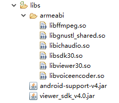备注：viewer_sdk_v.x.xjar是sdk对外提供的接口jar包，libnustl_shared.so是公有库，libsdk.so和libviewer.so是底层核心库，libffmpeg.so是音视频解码库，libichaudio.so是音频降噪、回音消除库。
2.AndroidManifest.xml权限配置：
//允许应用写（非读）用户的外部存储器
<uses-permissionandroid:name="android.permission.WRITE_EXTERNAL_STORAGE"/>
//允许一个程序修改当前设置，如本地化
<uses-permissionandroid:name="android.permission.CHANGE_CONFIGURATION"/>
//读写手机状态和身份
<uses-permissionandroid:name="android.permission.READ_PHONE_STATE"/>
//允许程序改变网络连接状态
<uses-permissionandroid:name="android.permission.CHANGE_NETWORK_STATE"/>
//允许程序改变Wi-Fi连接状态
<uses-permissionandroid:name="android.permission.CHANGE_WIFI_STATE"/>
//允许程序访问有关的网络信息
<uses-permissionandroid:name="android.permission.ACCESS_NETWORK_STATE"/>
//允许一个程序访问CellID或Wifi热点来获取粗略的位置
<uses-permissionandroid:name="android.permission.ACCESS_COARSE_LOCATION"/>
//允许程序访问Wi-Fi网络状态信息
<uses-permissionandroid:name="android.permission.ACCESS_WIFI_STATE"/>
//允许程序打开网络socket
<uses-permissionandroid:name="android.permission.INTERNET"/>
//允许访问振动设备
<uses-permissionandroid:name="android.permission.VIBRATE"/>
//允许程序读取底层系统日志文件
<uses-permissionandroid:name="android.permission.READ_LOGS"/>
//访问GMail账户列表
<uses-permissionandroid:name="android.permission.GET_ACCOUNTS"/>
//允许使用PowerManager的WakeLocks保持进程在休眠时从屏幕消失
<uses-permissionandroid:name="android.permission.WAKE_LOCK"/>
//允许程序禁用键盘锁
<uses-permissionandroid:name="android.permission.DISABLE_KEYGUARD"/>
//允许程序录制音频
<uses-permissionandroid:name="android.permission.RECORD_AUDIO"/>
//允许程序请求访问使用照相设备
<uses-permissionandroid:name="android.permission.CAMERA"/>
//允许访问闪光灯
<uses-permissionandroid:name="android.permission.FLASHLIGHT"/>
//允许程序读取所有者数据
<uses-permissionandroid:name="android.permission.WRITE_EXTERNAL_STORAGE"/>
//允许应用写（非读）用户的外部存储器
<uses-permissionandroid:name="android.permission.READ_OWER_DATA"/>
//允许一个程序写入但不读取所有者数据
<uses-permissionandroid:name="android.permission.WRITE_OWER_DATA"/>
//返回当前移动终端附近移动终端的信息
<uses-permissionandroid:name="android.permission.ACCESS_COARSE_UPDATES"/>
//允许一个程序访问精良位置（如GPS）
<uses-permissionandroid:name="android.permission.ACCESS_FINE_LOCATION"/>
//允许应用程序访问额外的位置提供命令
<uses-permissionandroid:name="android.permission.ACCESS_LOCATION_EXTRA_COMMANDS"/>
//允许程序读取或谢日系统设置
<uses-permissionandroid:name="android.permission.WRITE_SETTINGS"/>
//允许程序调用killBackgroundProcesses（String）。方法结束后台进程
<uses-permissionandroid:name="android.permission.KILL_BACKGROUND_PROCESSES"/>
//允许程序修改全局音频设置
<uses-permissionandroid:name="android.permission.MODIFY_AUDIO_SETTINGS"/>
//后台下载禁止发出通知
<uses-permissionandroid:name="android.permission.DOWNLOAD_WITHOUT_NOTIFICATION"/>
//可以使用DownloadProvider下载
<uses-permissionandroid:name="android.permission.ACCESS_DOWNLOAD_MANAGER"/>
3.混淆编译
对工程打包混淆，需要遵循如下规则：
//注：v.x.x根据实际版本号修改，例如v4.0
-libraryjars libs/viewer_sdk_v.x.x.jar(如果是Android Studio此行忽略)
-keepattributes InnerClasses
-keep class com.ichano.cbp.** {*;}
-keep class com.ichano.rvs.** {*;}
初始化及登陆
在程序入口初始化SDK：
mMyViewerHelper=MyViewerHelper.getInstance(getApplicationContext());
登录：mMyViewerHelper.login()，成功后即可正常使用。在初始化及登录的工程中要做三件事：
（1）初始化SDK
（2）设置登录相关信息，如companyID，companyKey等，具体请参考（XXXXX）
（3）设置“通知回调”的监听
具体代码如下：（参考Demo中的MyViewerHelper.java）
初始化SDK
public class MyViewerHelper extends ViewerInitHelper{
private static MyViewerHelpermViewer;
public static MyViewerHelpergetInstance(Context applicationContext) {
if(null == mViewer){
mViewer = new MyViewerHelper(applicationContext);
}
return mViewer;
}
private MyViewerHelper(Context applicationContext) {
super(applicationContext);
}
@Override
public String getCachePath() {
//设置缓存路径，存储日志、视频、图片等，如果不重载此函数则默认放在sd卡的“Viewer_packagename”下
return path;
}
@Override
public String getAppID() {
//设置观看端AppID，从网站注册获得
return "xxxxxxxxxxxxxxxxx";
}
@Override
public String getCompanyID() {
//设置CompanyID，从网站注册获得
return "xxxxxxxxxxxxxxxxx";
}
@Override
public String getCompanyKey() {
//设置CompanyKey，从网站注册获得
return "xxxxxxxxxxxxxxxxx";
}
@Override
public String getLicense() {
//设置License，观看端不需要license，返回空即可
return "";
}
//观看端sdk登录过程中发生状态变化、错误通知
@Override
public void onAuthResult(AuthState state,RvsError error) {
if( AuthState.INIT == state ) {
//鉴权初始化
} else if( AuthState.AUTHER == state ) {
//正在鉴权中
} else if( AuthState.CONNECTING == state ) {
//连接服务器中
} else if( AuthState.SUCCESS == state ) {
//连接服务器鉴权成功
//获取采集端CID
long cid = viewer.getCID();
} else if( AuthState.FAIL == state ) {
//连接服务器鉴权失败，失败原因查看error
}
}
//观看端和当采集端连接建立或者断开时回调通知，RemoteStreamerState.CANUSE后即可观看实时视频
@Override
public void onRemoteStreamerStateChange(long remoteCid,RemoteStreamerState state,RvsError error) {
if(state == RemoteStreamerState.INIT) {
//连接初始化中
} else if(state == RemoteStreamerState.AUTHER) {
//正在进行鉴权
} else if(state == RemoteStreamerState.CONNECTED) {
//采集端上线
} else if(state == RemoteStreamerState.CANUSE) {
//已与采集端打通，可观看实时视频
} else if(state == RemoteStreamerState.FAIL) {
//采集端连接失败
}
}
@Override
public void onUpdateCID(long cid){
//观看端CID发生变化时回调
}
@Override
public boolean useIchanoUserSystem(){
return false
}
}
登录
mMyViewerHelper = MyViewerHelper.getInstance(getApplicationContext());
mMyViewerHelper.login()
添加采集端设备
//添加采集端设备，调用connectStreamer后，sdk会连接相应的采集端设备，并通过onSessionStateChange和onStreamerPresenceState回调来通知观看端当前添加的采集端状态。
//cid为采集端的cid号，userName和password为采集端设置的用户名和密码。返回值表示添加采集端状态，true表示添加成功。
mViewer = Viewer.getViewer();
boolean ret = mViewer.connectStreamer(cid,userName,password);
观看端视频界面
1、加载GLMediaView
在主界面布局xml中加入GLMediaView控件，程序中加载此控件并启动。
具体代码如下：（参考Demo中的WatchActivity.java和activity_watchxml）
mGLMediaView = (GLMediaView)findViewById(R.id.media_view);
//是否启用自动连接，如果开启当bindCid之后，sdk会自动调用openLiveVideo打开实时视频。如果没有开启，则需要用户手动open。默认为true，开启。
mGLMediaView.autoOpenLiveVideo(true);
//设置观看界面窗口模式：FIT_CENTER为视频自适应；FIT_XY为视频填充view，此模式可能会导致视频失真。默认为FIT_CENTER模式
mGLMediaView.setVideoRenderType(VideoRenderType.FIT_CENTER);
//设置观看端打开实时视频的状态回调
mGLMediaView.setOnLinkCameraStatusListener(new LinkCameraStatusListener(){
@Override
public void startToLink() {
//开始打开实时视频
}
@Override
public void linkSucces() {
//打开实时视频成功
}
@Override
public void linkFailed(String msg) {
//打开实时视频失败
}
});
//绑定需要连接的采集端，如果autoOpenLiveVideo设置为true，sdk则会自动调用openLiveVideo
//mCid为采集端的cid号；DEFAULT_CAMERA_INDEX为采集端设置的摄像头编号。对于Android系统只能支持单摄像头，一般采集端都默认设置为0；
mGLMediaView.bindCid(mCid,camIndex);
//如果autoOpenLiveVideo设置为false,则需要用户手动打开实时视频
mGLMediaView.openLiveVideo();
//关闭实时视频
mGLMediaView.closeLiveVideo();
2、观看端视频全屏
//设置mGLMediaView的大小
mGLMediaView.setSufaceViewSize(width,heigh);
//设置mGLMediaView的显示模式
//FIT_CENTER 居中最大化显示在View中间，并保持视频宽高比
//FIT_XY拉伸显示，填充满整个mGLMediaView
mGLMediaView.setVideoRenderType(VideoRenderType.FIT_XY);
观看端基础功能
//播放当前视频流的实时声音
mGLMediaView.soundOn();
//关闭当前视频流的实时声音
mGLMediaView.soundOff();
//当前视频流声音是否打开，返回值为false，表示关闭
mGLMediaView.isSoundOn();
//开启观看端的对讲功能
mGLMediaView.startSendRevAudio();
//开启观看端的对讲功能
mGLMediaView.stopSendRevAudio();
2、截图
//通过takeCapture保存当前截图，path为截图保存的路径
//返回当前操作状态，true为截图成功
mGLMediaView.takeCapture(path);
3、本地录制
//通过startRecordVideo开启录制视频，path为录制视频的路径
//返回当前操作状态，true为录制成功
mGLMediaView.startRecordVideo(path);
//通过stopRecordVideo关闭录制视频
//返回当前操作状态，true为关闭成功
mGLMediaView.stopRecordVideo();
//返回当前录制状态，true为正在录制中
mGLMediaView.isRecordingVideo();
4、开启或关闭闪光灯
//开启或关闭采集端闪光灯
mGLMediaView.toggleCameraFlash(new ToggleCameraFlashResultCallback(){
@Override
public void onResult(int statusCode){
//statusCode: 0 成功，30001 处理失败，30002 参数错误，30003 未知错误，30004 不支持
}
});
5、切换前后摄像头
//切换采集端前后摄像头
mGLMediaView.switchFrontRearCamera(new SwitchFrontRearCameraResultCallback(){
@Override
public void onResult(int statusCode){
//statusCode: 0 成功，30001 处理失败，30002 参数错误，30003 未知错误，30004 不支持
}
});
自定义命令
自定义命令发送：
//向观看端发送自定义命令，remoteCID为采集端的cid; commandId为此次命令编号，commandID需要大于1000;command为传送的内容,command需要小于1024字节。
Viewer.getViewer().getCommand().sendCustomCommand(remoteCID,commandID,command);
自定义命令接受：
Viewer.getViewer().getCommand().setOnCustomCommandListener(new CustomCommandListener(){
@Override
public void onCustomCommandListener(long remoteCID,int commandId,String command){
//接受到采集端发送过来的自义定命令， remoteCID为采集端的cid, commandId为此次命令ID，command为传送的内容。
}
});
发送接受文件：
发送文件：
try {
//获取发送文件的FileInputStream流
FileInputStream fin = new FileInputStream(path+"/"+filename);
int len = fin.available();
byte[] buffer = new byte[len];
fin.read(buffer);
fin.close();
//发送文件给采集端，streamerCid为采集端cid; filename为文件描述，此处为文件名; buffer为文件内容。返回true表示发送成功。
boolean ret = Viewer.getViewer().getCommand().sendCustomData(streamerCid,filename,buffer);
} catch(Exception e){
e.printStackTrace();
}
接受文件：
Viewer.getViewer().getCommand().setOnCustomDataReceiveListener(new CustomDataReceiveListener(){
@Override
public void onReceiveCustomData(long remoteCID,String dataDescription,byte[] data){
// remoteCID为采集端cid,dataDescription为文件描述，此处为文件名，data为文件内容。
try{
//设置存储路径
FileOutputStream fout = new FileOutputStream(path+"/"+dataDescription);
fout.write(data);
fout.close();
} catch(Exception e){
e.printStackTrace();
}
}
});
设置采集端配置信息
1、设置采集端设备名
//获取采集端信息列表，cid为要获取的采集端设备cid号mStreamerInfo=Viewer.getViewer().getStreamerInfoMgr().getStreamerInfo(cid);
//获取采集端设备名
if(mStreamerInfo != null){
mStreamerInfo.getDeviceName();
}
//修改采集端设备名
if(mStreamerInfo != null)
mStreamerInfo.setDeviceName(deviceName);
}
2、设置采集端用户名和密码
//通过changeStreamerLoginUserPwd接口设置采集端设备的用户名和密码为采集端cid号;userName为将要设置的用户名;password为将要设置的密码;返回值requestid为本次操作的编号，留作校验本次操作是否成功
requestid = Viewer.getViewer().getCommand().changeStreamerLoginUserPwd(cid,userName,password);
//sdk自定义命令的操作状态回调（与用户自定义命令不同）
Viewer.getViewer().getCommand().setCmdCallback(new CommandCallback(){
@Override
public void onCmdRequestStatus(long requestID,int statusCode){
// requestID操作命令的编码
// statusCode : 0 成功，30001 处理失败，30002 参数错误，30003 未知错误，30004 不支持，30005 查无文件
}
});
3、设置采集端定时录制
获取定时录制信息
//cid为采集端的cid号;camIndex为采集端设置的摄像头编号，一般采集端都是单摄像头，默认为0
//如果设置存在则直接展示，否则需要创建当前采集端设置对象
RvsTimeRecordInfo rvsTimeRecordInfo = Viewer.getViewer().getStreamerInfoMgr().getStreamerTimeRecordInfo(cid,camIndex);
if(null == rvsTimeRecordInfo || null == rvsTimeRecordInfo.getScheduleSettings()){
//初始化定时录制设置，允许有多个设置，n为设置的个数
ScheduleSetting[] scheduleSetting = new ScheduleSetting[n];
//如果设置不存在则创建，并设置默认值
//当前设置是否生效
scheduleSetting[0].setEnable(false);
//当前设置开始时间，值为相对零点的偏移秒数
scheduleSetting[0].setStartSecond(0);
//当前设置结束时间，值为相对零点的偏移秒数
scheduleSetting[0].setEndSecond(23 * 3600 + 59 * 60);
//当前设置生效日期
//value & 0x01 为true表示周一有效
//value & 0x02 为true表示周二有效
//value & 0x04 为true表示周三有效
//value & 0x08 为true表示周四有效
//value & 0x10 为true表示周五有效
//value & 0x20 为true表示周六有效
//value & 0x40 为true表示周日有效
//127位与下来都为true，则表示周一到周日全部有效
scheduleSetting[0].setWeekFlag(127);
//当前采集端定时录制设置对象不存在则创建
rvsTimeRecordInfo = new RvsTimeRecordInfo();
//当前定时录制设置的camIndex,默认为0
rvsTimeRecordInfo.setCamIndex(camIndex);
//当前具体设置内容
rvsTimeRecordInfo.setScheduleSettings(scheduleSetting);
}
//更改当前第n个设置的内容
rvsTimeRecordInfo.getScheduleSettings()[n].setEnable(true);
rvsTimeRecordInfo.getScheduleSettings()[n].setStartSecond(0);
rvsTimeRecordInfo.getScheduleSettings()[n].setEndSecond(10 * 3600 + 10 * 60);
rvsTimeRecordInfo.getScheduleSettings()[n].setWeekFlag(127);
//保存当前所有设置
Viewer.getViewer().getStreamerInfoMgr().setStreamerTimeReocrdInfo(mCid,rvsTimeRecordInfo);
4、设置采集端运动侦测
获取运动侦测信息
//cid为采集端的cid号;camIndex为采集端设置的摄像头编号，一般采集端都是单摄像头，默认为0
//如果设置存在则直接展示，否则需要创建当前采集端设置对象
RvsAlarmRecordInfo rvsAlarmRecordInfo = Viewer.getViewer().getStreamerInfoMgr().getStreamerAlarmRecordInfo(cid,camIndex);
if(null == rvsAlarmRecordInfo || null == rvsAlarmRecordInfo.getScheduleSettings()){
//初始化运动侦测设置，允许有多个设置，n为设置的个数
ScheduleSetting[] scheduleSetting = new ScheduleSetting[n];
//如果设置不存在则创建，并设置默认值
//当前设置是否生效
scheduleSetting[0].setEnable(false);
//当前设置开始时间，值为相对零点的偏移秒数
scheduleSetting[0].setStartSecond(0);
//当前设置结束时间，值为相对零点的偏移秒数
scheduleSetting[0].setEndSecond(23 * 3600 + 59 * 60);
//当前设置灵敏度
//1是灵敏度低，2是灵敏度中，3是灵敏度高
scheduleSetting[0].setIntervalValue(1);
//当前设置生效日期
//value & 0x01 为true表示周一有效
//value & 0x02 为true表示周二有效
//value & 0x04 为true表示周三有效
//value & 0x08 为true表示周四有效
//value & 0x10 为true表示周五有效
//value & 0x20 为true表示周六有效
//value & 0x40 为true表示周日有效
//127位与下来都为true，则表示周一到周日全部有效
scheduleSetting[0].setWeekFlag(127);
//当前采集端运动侦测设置对象不存在则创建
rvsAlarmRecordInfo = new RvsAlarmRecordInfo();
//当前运动侦测设置的camIndex,默认为0
rvsAlarmRecordInfo.setCamIndex(camIndex);
//当前具体设置内容
rvsAlarmRecordInfo.setScheduleSettings(scheduleSetting);
}
更改运动侦测信息
//更改当前第n个设置的内容
rvsTimeRecordInfo.getScheduleSettings()[n].setEnable(true);
rvsTimeRecordInfo.getScheduleSettings()[n].setStartSecond(0);
rvsTimeRecordInfo.getScheduleSettings()[n].setEndSecond(10 * 3600 + 10 * 60);
rvsTimeRecordInfo.getScheduleSettings()[n].setIntervalValue(1);
rvsTimeRecordInfo.getScheduleSettings()[n].setWeekFlag(127);
//保存当前所有设置
Viewer.getViewer().getStreamerInfoMgr().setStreamerAlarmRecordInfo(mCid,rvsAlarmRecordInfo);
登出及注销
mMyViewerHelper = MyViewerHelper.getInstance(getApplicationContext());
mMyViewerHelper.logout()
- iOS采集端开发文档
- 导入说明
- 初始化与登录
-
采集端视频界面
- 加载视频界面
- 设置视频参数
- 截图
-
录制视频
- 本地录制
- 定时录制
- 运动侦测
- 自定义命令
- 发送接受文件
- iOS观看端开发文档
- 导入说明
- 初始化及登录
- 添加采集端设备
-
观看端视频界面
- 加载GLMediaView
- 观看端音频
- 截图
- 本地录制
- 开启或关闭闪光灯
- 切换前后摄像头
- 自定义命令
- 发送接受文件
-
设置采集端
- 设置采集端设备名
- 设置采集端用户名和密码
- 设置采集端定时录制
- 设置采集端运动侦测
iOS采集端sdk集成指南
1.导入SDK:
如果您要集成众云视频采集端相关功能，只需要导入众云对应的sdk，即把Rvs_Streamer.framework导入您工程里。如图所示。
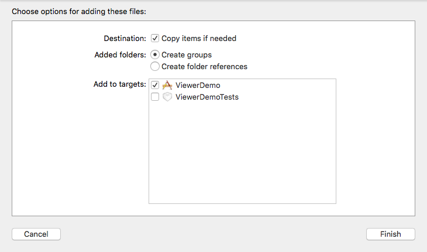2.添加依赖库：
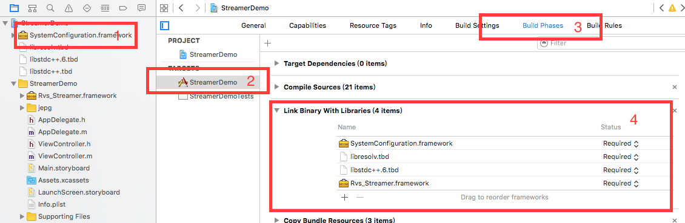3.设置bitcode
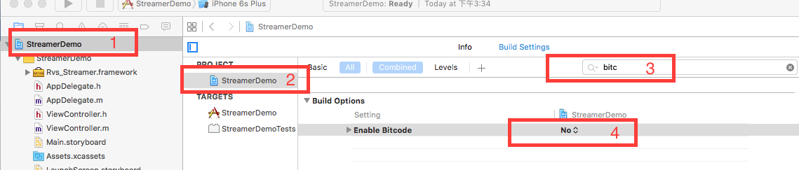初始化及登录
（1）初始化sdk
（2）设置登录相关信息，如companyID，companyKey等
（3）设置“通知回调”的监听
具体代码如下：（参考StreamerDemo中的AvsServerCommunicator.m）
初始化sdk
导入头文件
#import <Rvs_Streamer/Rvs_Streamer_API.h>
//在程序入口设置工作路径启动sdk
// 获取RvsStreamerInitHelper单例
RvsStreamerInitHelper *helper = [RvsStreamerInitHelper
streamerInitHelper];
// 设置代理
helper.delegate = self;
//设置Config文件、record文件路径、APP版本
//workPath:表示sdk生成的配置文件存储路径 如果为nil则采用默认
//cachePath:表示sdk log文件存储路径 如果为nil则采用默认
//appVersion:表示App版本 如果为nil则采用默认
[helper setStreamerWithWorkPath:[self getSDKConfigFilePath] cachePath:
[self getSDKRecordFilePath] appVersion :[infoDict objectForKey:(NSString *)
kCFBundleVersionKey]];
// 设置sdk参数，CompanyID、CompanyKey、AppID、License（需要去官网申请）
[helper setLoginInfoWithCompanyID:K_COMPANY_ID companyKey:K_COMPANY_KEY appID:
K_APP_ID license:K_LICENSE];
登录sdk
[helper login];
//采集端sdk登录过程中发生状态变化、错误、登录进度通知
- (void)onAuthResultWithAuthState:(EN_RVS_STREAMER_AUTH_STATE)authState
errCode:(EN_RVS_ERR)errCode;
//CID变化通知
- (void) helper:(unsigned long long) helper {
}
//设备名称有变化时通知
- (void)onDeviceNameChange:(NSString*)deviceName {
}
//用户名与密码有变化时通知
- (void)onUpdateUserName:(NSString*)userName andPwd:(NSString*)pwd {
}
//观看端和当采集端连接建立或者断开时回调通知。
- (void)onSession:(unsigned long long)remoteCID StateChange:(EN_RVS_STREAMER_SESSION_STATE)state {
//remoteCID观看端cid
if (state == E_RVS_STREAMER_SESSION_STATE_CONNECTED) {
//双方建立连接
} else if (state == E_RVS_STREAMER_SESSION_STATE_CONNECT_ERROR) {
//双方断开连接
}
}
采集端视频界面
1.加载视频界面
具体代码如下：（参考StreamerDemo）
写一个ZYMediaSurfaceView类继承RvsMediaSurfaceView 在viewController中
self.mediaSurfaceView = [[ZYMediaSurfaceView alloc] init];
//获取采集端视频画面
[self.mediaSurfaceView videoShowWithView:self.videoView];
// 如需设置视频参数请调用下面的方法
[self.mediaSurfaceView openCameraWithResolution:
RvsStreamResolution720p];
//打开摄像头设置分辨率(默认采用480p)
[self.mediaSurfaceView openCamera];
2、设置视频参数：
// 如需更改视频参数请调用(一定要在openCamera前面设置) ，
一般不需要重新设置。
// bitrate为码率: RvsStreamBitrate320p、RvsStreamBitrate480p、
RvsStreamBitrate720p、RvsStreamBitrate1080p
// frameRate 帧率 一般采用15左右即可
// iFrameInterval i帧间隔 一般 采 用 2秒
[self.mediaSurfaceView setVideoParamWithBitrate:
RvsStreamBitrate480p frameRate:15 iFrameInterval:2];
截图参数代码如下:
// JpegType图片类型 参数有HD、NORMAL、ICON，图片质量不同。
UIImage *image=[mediaView getCaptureImageWithType:
EN_RVS_STREAMER_JPEG_TYPE_NORMAL];
录制视频：
1.本地录制：
//开启本地视频录制
[self.mediaSurfaceView startRecord];
//结束本地视频录制
[self.mediaSurfaceView startRecord];
//是否正在录制
self.mediaSurfaceView.isRecording;
2.定时录制：
//定时录制需要通过观看端开启
//采集端定时录制设置发生变化的通知回调
// Rvs_Streamer_Media_Record_Delegate
- (void)onRecordStart {
}
- (void)onRecordStop {
}
- (void)onScheduledRecordSettingUpdate:(NSArray *)recordSettings ForCameraID:(NSUInteger)cameraId {
for (RvsTimeRecordSetting *record in recordSettings) {
RvsScheduleSetting *setting = record.schedule;
//录制是否开启
BOOL enable = setting. schedule;
//录制开始时间，值为相对零点的偏移秒数
//value = hour*3600 + minute*60 + second
NSUInteger start = setting.startPoint;
//录制结束时间，值为相对零点的偏移秒数
//value = hour*3600 + minute*60 + second
NSUInteger end = setting.endPoint;
//录制日期
//通过二进制方式，从低位到高位，分别表示周一到周日。
//value & 0x01 为true表示周一有效
//value & 0x02 为true表示周二有效
//value & 0x04 为true表示周三有效
//value & 0x08 为true表示周四有效
//value & 0x10 为true表示周五有效
//value & 0x20 为true表示周六有效
//value & 0x40 为true表示周日有效
//127位与下来都为true，则表示周一到周日全部有效
NSUInteger weakFlag = setting.weekFlag;
}
}
运动侦测
运动侦测相关代码如下:
//运动侦测需要通过观看端开启
//运动侦测状态回调
//Rvs_Streamer_Media_MotionDetect_Delegate
//运动侦测功能开启
-(void)onMotionDetectStart {
}
//运动侦测功能关闭
- (void)onMotionDetectStop {
}
- (void)onMotionDetectSettingUpdate:(NSArray *)motionSettings ForCameraID:(NSUInteger)cameraId {
for (RvsMotionDetectSetting *motion in motionSettings) {
RvsScheduleSetting *setting = motion.schedule;
//运动侦测设置是否开启
BOOL enbale = setting.enable;
//运动侦测设置灵敏度
//1是灵敏度低，2是灵敏度中，3是灵敏度高
NSUInteger sensitive = NSUInteger.sensitive;
//运动侦测设置开始时间，值为相对零点的偏移秒数
//value = hour*3600 + minute*60 + second
NSUInteger start = setting.startPoint;
//运动侦测设置结束时间，值为相对零点的偏移秒数
//value = hour*3600 + minute*60 + second
NSUInteger end = setting.endPoint;
//运动侦测设置日期
//通过二进制方式，从低位到高位，分别表示周一到周日。
//value & 0x01 为true表示周一有效
//value & 0x02 为true表示周二有效
//value & 0x04 为true表示周三有效
//value & 0x08 为true表示周四有效
//value & 0x10 为true表示周五有效
//value & 0x20 为true表示周六有效
//value & 0x40 为true表示周日有效
//127位与下来都为true，则表示周一到周日全部有效
NSUInteger weakFlag = setting.weekFlag;
}
}
自定义命令
1.自定义命令发送：
//cmdId: 自定义命令id，取值范围应大于1000，小于1000为内部保留id
//command: 命令字符串command需要小于1024字节
//peerCID: 观看端CID
- (NSInteger)sendCustomCommandWithId:(int)cmdId command:(NSString*)
command toPeer:(unsigned long long)peerCID;
2.自定义命令接受：
// cmdId 命令id,当cmdId = -1即未定义id
// command command命令
// peerCID 观看端CID
- (void)onRecvCustomCmdWithId:(int)cmdId command:(NSString *)
command fromPeer:(unsigned long long)peerCID;
发送接受文件
1.发送文件：
//data： 数据data, 读取发送文件转换成NSData
//dataDesc： 数据描述（用于唯一标识数据，长度不能超过128个字节）
//peerCID： 接收端CID
//返回值：0代表成功，非零代表失败
- (NSInteger)sendCustomData:(NSData *)data dataDesc:(NSString *)
dataDesc toPeer:(unsigned long long)peerCID;
2.接受文件
//data: 数据data 根据描述文件确定发送文件类型，将NSData转换为文件使用
//dataDesc: 数据描述（用于唯一标识数据，长度不能超过128个字节）
//peerCID: 发送端CID
- (void)onRecvCustomData:(NSData *)fileData fileDesc:(NSString *)
fileDesc formPeer:(unsigned long long)peerCID;
iOSsdk集成指南
1.导入SDK
如果您要集成众云视频观看端相关功能，只需要导入众云对应的sdk，即把Rvs_Viewer_framework导入您的工程。
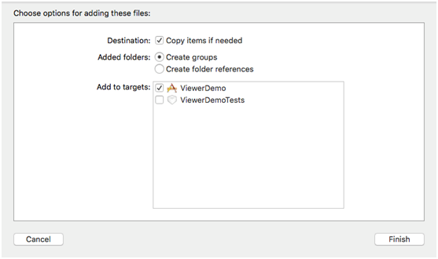2.添加依赖库
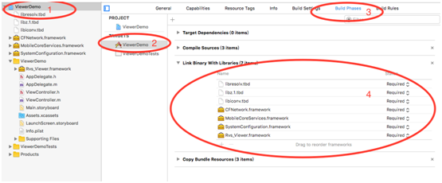3.设置bitcode
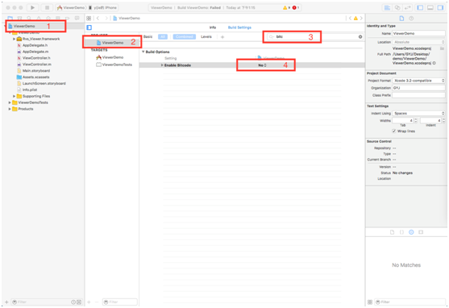初始化及登录
（1）初始化sdk
（2）设置登录相关信息，如companyID，companyKey等
（3）设置“通知回调”的监听
具体代码如下：（参考Demo中的AppDelegate.m）
导入头文件
#import <Rvs_Viewer/Rvs_Viewer_API.h>
-(BOOL)application:(UIApplication*)applicationdidFinishLaunchingWithOptions:(NSDictionary*)launchOptions{
// 获取RvsViewerInitHelper单例也可以写在其他地方
RvsViewerInitHelper*viewer=[RvsViewerInitHelper viewerInitHelper];
// 设置代理
viewer.delegate = self;
//初始化Rvs SDK 工作环境
//workPathRvs SDK 工作配置路径如果为nil则采用默认
//cachePathRvs SDK 录像缓存路径如果为nil则采用默认
//appVersion app版本号如果为nil则采用默认
//@return 0 代表成功，非0代表失败
[viewersetViewerWithWorkPath:nil cachePath:nil appVersion:version];
// 设置sdk参数，CompanyID、CompanyKey、AppID（需要去官网申请）
[viewersetLoginInfoWithCompanyID:KCompanyID companyKey:KCompanyKey appID:KAppID];
// 打开Log开关
[viewersetLogEnabled:YES];
// 登录SDK
[viewerlogin];
return YES;
}
//观看端sdk登录过程中发生状态变化、错误、登录进度通知
- (void)onAuthResultWithAuthState:(EN_RVS_VIEWER_AUTH_STATE)authState
errCode:(EN_RVS_ERR)errCode;
//观看端cid发生变化时通知应用
//localCID观看端CID
-(void)onUpdateCID:(unsigned long long)localCID
添加采集端设备
//添加采集端设备，调用connectStreamer后，sdk会连接相应的采集端设备，并通过EN_RVS_STREAMER_PRESENCE_STATE和EN_RVS_STREAMER_CONN_STATE回调来通知观看端当前添加的采集端状态。
//CID为采集端的cid号，userName和pwd为采集端设置的用户名和密码。
//链接采集端
[[Rvs_Viewer defaultViewer]connectStreamer:CID UserName:userName Password:pwd];
观看端视频界面
1、加载GLMediaView
具体代码如下：（参考Demo中ViewRenderViewController.h）
self.mediaView = [[GLMediaView alloc]initRealTimeStreamWithCID:self.CID CameraIndex: 0:TargetView:self.liveVideoView];
//视频渲染方式
//RvsVideoRenderTypeFitCenter居中最大化显示在View中间，并保持视频宽高比
//RvsVideoRenderTypeFitXY为视频填充view，此模式可能会导致视频失真。
//默认为RvsVideoRenderTypeFitCenter模式
self.mediaView.videoRenderType = RvsVideoRenderTypeFitCenter;
//设置观看端打开实时视频的状态回调
__weaktypeof(self)safeSelf = self;
[self.mediaViewstartStreamOnStreamChannelCreated:^(NSDictionary*returnCode){
//拿到第一帧画面
}FirstVideoFrameShow:^(NSDictionary*returnCode){
//激活声音般在拿到第一帧画面时调用如果不写会听不到声音
[safeSelf.mediaViewactivateVoice];
}PlayEnded:^(NSError*error){
}];
//结束视频采集
-(void)stopStream;
2、观看端音频
//开始静音
-(void)startMute;
//结束静音
-(void)stopMute;
//开启观看端的对讲功能
-(void)startTalk;
//结束观看端的对讲功能
-(void)stopTalk;
3、截图
//截取一张本地流图片
-(UIImage*)caputreVideoImage;
4、本地录制
//通过startRecordVideo开启录制视频，path为录制视频的路径
//开始录制视频
//filePath录制文件名，需要以.mp4结尾
-(BOOL)startRecordAtPath:(NSString*)filePath;
//结束视频录制
//completionBlock录制完成回调block
//failureBlock录制失败回调block
-(void)stopRecordWithCompletionBlock:(RenderCompletionBlock)completionBlockfailureBlock:(RenderFailureBlock)failureBlock;
5、开启或关闭闪光灯
//切换闪光灯
//completionBlock成功回到block
//failureBlock失败回调block
-(void)torchSwitchWithCompletionBlock:(RenderCompletionBlock)completionBlockFailureBlock:(RenderFailureBlock)failureBlock;
6、切换前后摄像头
//切换采集端前后摄像头
//completionBlock切换成功回到block
//failureBlock切换失败回调block
-(void)cameraSwitchWithCompletionBlock:(RenderCompletionBlock)completionBlockFailureBlock:(RenderFailureBlock)loginState;
7、自定义命令
自定义命令发送：
//cmdId自定义命令id，取值范围应大于1000，小于1000为内部保留id
//command 命令字符串
//peerCID采集端CID
-(NSInteger)sendCustomCommandWithId:(int)cmdId
command:(NSString*)command
toPeer:(unsigned long long)peerCID;
自定义命令接受：
//cmdId命令id,当cmdId=-1即未定义id
//command command命令
//peerCID采集端CID
-(void)onRecvCustomCmdWithId:(int)cmdId
command:(NSString*)command
fromPeer:(unsigned long long)peerCID;
8、发送接受文件
发送文件：
//data：数据data, 读取发送文件转换成NSData
//dataDesc：数据描述（用于唯一标识数据，长度不能超过128个字节）
//peerCID：接收端CID
//返回值：0代表成功，非零代表失败
-(NSInteger)sendCustomData:(NSData*)data
dataDesc:(NSString*)dataDesc
toPeer:(unsigned long long)peerCID;
接受文件：
//data:数据data根据描述文件确定发送文件类型，将NSData转换为文件使用
//dataDesc:数据描述（用于唯一标识数据，长度不能超过128个字节）
//peerCID:发送端CID
-(void)onRecvCustomData:(NSData*)fileData
fileDesc:(NSString*)fileDesc
formPeer:(unsigned long long)peerCID;
设置采集端
1、设置采集端设备名
//获取采集端基本信息
//streamerCID采集端CID
//@return 采集端基本信息
-(RvsStreamerInfo*)getStreamerInfo:(unsigned long long)streamerCID;
//设置采集端名称
//streamerCID采集端CID
//streamerName采集端名称
//@return 0 代表成功，非0代表失败
-(NSInteger)setStreamer:(unsigned long long)streamerCID
Name:(NSString*)streamerName;
2、设置采集端用户名和密码
//修改采集端登录信息
//streamerCID采集端CID
//newUser新用户名
//newPwd新密码
//@return 请求ID
-(unsigned long long)changeStreamerLoginInfo:(unsigned long long)streamerCIDUserName:(NSString*)newUser
Password:(NSString*)newPwd;
3、设置采集端定时录制
获取定时录制信息
//获取采集端定时录制配置信息
//streamerCID采集端CID
//cameraIndex镜头ID
//@return 采集端定时录制配置信息
-(RvsStreamerTimeRecordInfo*)getStreamerRecordSchedule:(unsigned long long)streamerCIDCameraIndex:(NSUInteger)cameraIndex;
更改定时录制信息
//设置采集端定时录制配置信息
//streamerCID采集端CID
//cameraIndex镜头ID
//timeRecordInfo定时录制配置信息
// @return 0 代表成功，非0代表失败
-(NSInteger)setStreamer:(unsigned long long)streamerCID
CameraIndex:(NSError)cameraIndex
TimeReocrdInfo:(RvsStreamerTimeRecordInfo*)timeRecordInfo
{
for(RvsTimeRecordSetting*record in recordSettings){
RvsScheduleSetting*setting = record.schedule;
//录制是否开启
BOOL enable = setting.enable;
//录制开始时间，值为相对零点的偏移秒数
//value = hour*3600 + minute*60 + second
NSUInteger start = setting.startPoint;
//录制结束时间，值为相对零点的偏移秒数
//value = hour*3600 + minute*60 + second
NSUInteger end = setting.endPoint;
//录制日期
//通过二进制方式，从低位到高位，分别表示周一到周日。
//value & 0x01 为true表示周一有效
//value & 0x02 为true表示周二有效
//value & 0x04 为true表示周三有效
//value & 0x08 为true表示周四有效
//value & 0x10 为true表示周五有效
//value & 0x20 为true表示周六有效
//value & 0x40 为true表示周日有效
//127位与下来都为true，则表示周一到周日全部有效
NSUInteger weakFlag = setting.weekFlag;
}
}
4、设置采集端运动侦测
获取运动侦测信息
//获取采集端移动侦测报警配置信息
//streamerCID采集端CID
//cameraIndex镜头ID
//@return 采集端移动侦测报警配置信息
-(RvsStreamerAlarmRecordInfo*)getStreamerMotionSchedule:(unsigned long long)streamerCIDCameraIndex:(NSUInteger)cameraIndex
{
RvsScheduleSetting*setting = motion.schedule;
}
更改运动侦测信息
//设置采集端移动侦测检测开关
//streamerCID采集端CID
// flag 移动侦测检测开关
//@return 0 代表成功，非0代表失败
-(NSInteger)setStreamer:(unsigned long long)streamerCIDDetectFlag:(NSUInteger)flag
{
for(RvsMotionDetectSetting*motion in motionSettings){
RvsScheduleSetting*setting = motion.schedule;
//运动侦测设置是否开启
BOOL enbale = setting.enable;
//运动侦测设置灵敏度
//1是灵敏度低，2是灵敏度中，3是灵敏度高
NSUInteger sensitive = motion.sensitive;
//运动侦测设置开始时间，值为相对零点的偏移秒数
//value = hour*3600 + minute*60 + second
NSUInteger start = setting.startPoint;
//运动侦测设置结束时间，值为相对零点的偏移秒数
//value = hour*3600 + minute*60 + second
NSUInteger end = setting.endPoint;
//运动侦测设置日期
//通过二进制方式，从低位到高位，分别表示周一到周日。
//value & 0x01 为true表示周一有效
//value & 0x02 为true表示周二有效
//value & 0x04 为true表示周三有效
//value & 0x08 为true表示周四有效
//value & 0x10 为true表示周五有效
//value & 0x20 为true表示周六有效
//value & 0x40 为true表示周日有效
//127位与下来都为true，则表示周一到周日全部有效
NSUInteger weakFlag = setting.weekFlag;
}
}
- Windows采集端开发文档
- 开发文档
- Windows观看端开发文档
- 开发文档
Windows采集端开发文档
Windows观看端开发文档
- OCX观看端开发文档
- 开发文档
OCX观看端开发文档
本IE控件有如下2种使用方式，下载ocx的demo后，请根据实际情况选择使用:
(1) sdk\iPlayer.CAB：请参考示例web页面demo\rvs_player.html，在web页面中自动注册使用；
(2) sdk\ICH_RVS_PLAYER\ICH_RVS_PLAYER.ocx：需要先使用regsvr32.exe命令手动注册该ocx文件，再参考demo\rvs_player.html使用；
请注意：
(1) demo\rvs_player.html示例中ICH_SysInit接口的3个入参需要替换成真实信息，demo方可正常运行。请到众云视频官网http://rvs.ichano.cn/download注册后获取相关信息。
(2) demo\rvs_player.html页面默认给出的cid为50000072的采集端是众云视频官方提供的测试采集端，长期在线运行，可以通过连接此采集端了解和测试本控件提供的基本功能。
具体接口请参考以下文档：
- Linux采集端开发文档
- 开发文档
Linux采集端开发文档
- 常见问题及解答
- 常见问题
常见问题及解答:
[Q1]为什么使用众云视频SDK集成后，设置运动侦测，没有报警推送。但是众云系列中性版本却有？
[A1] 目前众云视频SDK没有提供推送功能，需要开发者自己集成推送平台（如个推）。如果开发者嫌麻烦、或者没有条件集成推送平台。可以集成众云视频的用户系统，此用户系统包含了推送功能，具体细节请联系联系我们的商务。
[Q2] 静态分配和动态分配CID的区别
[A2] 目前众云视频平台提供两种授权方案：
方案一：动态分配CID
优点：适用于软件开发者，无需在代码中输入license，由服务器动态生成。
缺点：无法事先预知每台硬件的license号。
方案二：静态分配CID
优点：适用于硬件开发者，每台硬件嵌入指定的license，这样可以事先知晓硬件中嵌入的license，可事先在硬件上贴上二维码等相关信息。
缺点：不够灵活，license需要事先申请并与硬件绑定。
[Q3] 如果license嵌入代码里，岂不是1千台硬件就要生成1千个应用程序？
[A3] 当然不用这样，一般每台硬件都是有唯一ID。因为我们license形式不限，所以可以把硬件ID作为license。这样只需要一个应用，动态获取每个硬件的ID作为license即可。